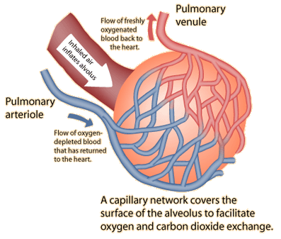

Gas Exchange in the Lungs
Gas exchange in the lungs takes place in the tiny air sacs called alveoli in the lungs. The process of inhalation must inflate the alveoli, but it can only do so because of the presence of a surfactant fluid that coats the alveoli and lowers the surface tension of their walls. |
|  | The lungs have millions of alveoli (Thibodeau & Patton) and each lies in contact with capillaries. The combination of the alveolar wall, the capillary wall and the basement membrane that lies between them is a very thin barrier across which oxygen and carbon dioxide diffuse readily. |
| Transfer of oxygen and carbon dioxide across the membranes occurs by diffusion, but the solubility of these gases in the material of the membrane also play a role. The influence of solubility on diffusion in modeled in Graham's law. |

|
| Respiratory System |
Reference
Audesirk & Audesirk
Ch 28
Shier, D. et al.
Ch 19
Thibodeau & Patton
Ch 23
| HyperPhysics***** Biology | R Nave |